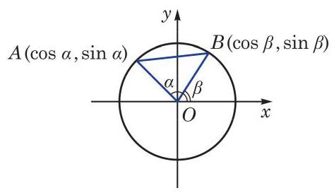
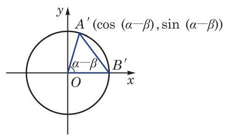
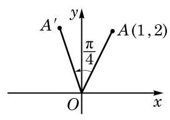
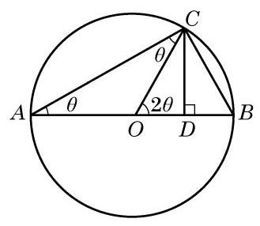

例题 1
例 1 利用两角和与差的余弦公式,求 和 的值.
学生阅读版 / 沪教版高中数学
必修第二册
第6章三角 · 保留教材主线与原题
教材与正式教参整合
我们先推导两角差 的余弦公式.
设 为任意给定的两个角,把它们的顶点置于平面直角坐标系的原点 ,始边都与 轴的正半轴重合,而它们的终边分别与单位圆相交于 两点 (图 6-2-1). 点 的坐标分别为 .

图 6-2-1

图 6-2-2
下面考虑角 的余弦. 为此把角 的终边 及 都绕原点 旋转 角,它们分别交单位圆于点 及 (图6-2-2). 由于都转动了 角,因此 也可以是一个以射线 为始边、以射线 为终边的角,而点 的坐标是 ,点 的坐标是 .
根据两点间的距离公式,在图 6-2-1 中,有
而在图 6-2-2 中, 有
因为将射线 同时绕原点 旋转 角,就分别得到射线 ,所以
从而得到
即
这样, 我们就得到两角和与差的余弦公式
简记作
例 1 利用两角和与差的余弦公式,求 和 的值.
例 2 已知 . 求 .
例 3 若 为锐角, . 求角 .
(1) ;
(2) .
(1) ;
(2) .
根据两角差的余弦公式和诱导公式, 就可以得到两角和的正弦公式. 事实上，
将上式中的 用 代换,就可以得到两角差的正弦公式
这样, 我们得到两角和与差的正弦公式
简记作
例 4 利用两角差的正弦公式,求 的值.
例 5 证明: .
例 6 已知 . 求:
(1) ;
(2) .
例 7 利用两角和的正切公式,求 的值.
(1) ; (2) .
(1) ; (2) .
例 8 若 不是直角三角形,求证:
例 9 如图 6-2-3,已知点 的坐标为 ,将 绕坐标原点 逆时针旋转 至 . 求点 的坐标.

图 6-2-3
例 10 把下列各式化为 的形式:
(1) ；
(2) ；
(3) .
(1)
(2) .
在两角和的正弦、余弦和正切公式中,用 代入,就得到二倍角的正弦、余弦和正切公式
例 11 已知 . 求 和 的值.
例 12 试用 表示 .
例 13 证明:
(1) ；
历史上，三倍角公式曾为求解一元三次方程提供思路.
(2) .
(1) ; (2) ；
(3) .
(1) ； (2) ；
(3) .
在学习两角和与差的公式、二倍角公式的基础上，我们可以推导出更多的三角恒等关系. 如果已知角 的正弦、余弦及正切值,用二倍角公式就可以得到角 的相应值. 反之,如果已知角 的正弦、余弦及正切值,也可以得到角 的相应值.
例 14 用 分别表示 及 .
例 15 证明: .
例 16 证明: .
例 17 证明: .
(1) ； (2)sin ； (3) .
(1) ;
(2) ；
(3) ;
(4) .
(1) ;
(2) .
(1) ； (2) ；
(3) ；___ (4) .
(1) ;
(2) .
(1) ； (2) .
三角变换公式很早就为数学家所熟知. 在古希腊时期, 由于研究天文的需要, 所考察的主要是球面三角学. 数学家托勒密(C. Ptolemy)在其《大汇编》一书中就给出了已知 及 ,求 与 的方法,即两角和与差的正弦公式 . 他在书中还详细给出了在知道 及 的正弦的基础上,如何求出 的正弦的方法,并给出了已知 求 和 的方法. 在此基础上,他对从 到 间所有相差 的角度编制出了正弦表.
虽然很多三角恒等式在托勒密的《大汇编》中都已存在, 但法国数学家韦达(F. Viete) 进行了较为系统的整理、补充和发展. 韦达是最早将代数变换方法引入三角学的人，他不仅给出了和差化积公式,也对 倍角的 及 进行了深入的研究. 在研究奇数等分角的过程中,他发现了一元三次方程 如下的三角解法: 在三倍角余弦公式 中,令 ,就可知 为上述三次方程的一个根. 不仅如此,他还根据 倍角的 的公式,给出了一个 45 次方程的 23 个根 (可惜的是, 其余的 22 个负根均被舍去).
从三角学发展史看, 利用几何知识证明三角变换公式十分常见, 韦达就曾用几何知识证明了和差化积公式. 这里我们给出倍角公式的一个几何证明方法.

图 6-2-4
如图 6-2-4, 是圆心为 且半径为 1 的圆的一条直径,点 为圆上一点. 连接 ,并过点 作 ,记其垂足为 . 设 ,则 . 因为 为圆 的一条直径,所以 .
在直角三角形 中,有 . 于是,在直角三角形 中,就有 及
但在直角三角形 中,有 .
比较上面的式子,就得到倍角公式: .
同学们也可思考其他一些三角变换公式的几何证明. 虽然几何方法直观, 但在上述公式的证明过程中,角的限定范围多在 或 之间. 考虑到一般性,我们在本书中借助于平面直角坐标系及单位圆来论证三角公式, 并利用代换和转化思想得到更多的三角公式.